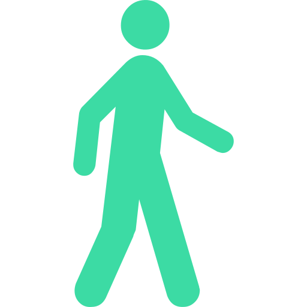

<ion-header>
  <ion-toolbar>
    <ion-buttons>
      <ion-back-button defaultHref="tabs/tab4" [text]="'Retour'" [color]="'#3CDBA4'" class="back"></ion-back-button>
    </ion-buttons>
    <ion-row>
      <ion-col col-5></ion-col>
      <ion-title>
        <ion-col col-2></ion-col>
      </ion-title>
      <ion-col col-5></ion-col>
    </ion-row>
  </ion-toolbar>
</ion-header>

<ion-content padding class="contain" color="lightgray">
  <ion-card routerLink="/tabs/sport-faible-intensité">
    <ion-card-header>
      <ion-card-title style="font-size: 1.3rem">Sport de faible intensité</ion-card-title>
    </ion-card-header>

    <ion-card-content class="glycemie-card ion-text-center" >
      <ion-row><ion-col col-4></ion-col> <ion-col col-4></ion-col><ion-col col-4></ion-col></ion-row>
    </ion-card-content>
  </ion-card>
  <ion-card routerLink="/tabs/sport-moyenne-intensité">
    <ion-card-header>
      <ion-card-title style="font-size: 1.3rem">Sport d'intensité moyenne</ion-card-title>
    </ion-card-header>

    <ion-card-content class="glycemie-card ion-text-center" >
      <ion-row><ion-col col-4></ion-col> <ion-col col-4></ion-col><ion-col col-4></ion-col></ion-row>
    </ion-card-content>
  </ion-card>
  <ion-card routerLink="/tabs/sport-intense">
    <ion-card-header>
      <ion-card-title style="font-size: 1.3rem">Sport d'intensité élevée</ion-card-title>
    </ion-card-header>

    <ion-card-content class="glycemie-card ion-text-center" >
      <ion-row><ion-col col-4></ion-col> <ion-col col-4></ion-col><ion-col col-4></ion-col></ion-row>
    </ion-card-content>
  </ion-card>
</ion-content>
